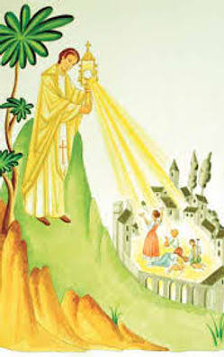
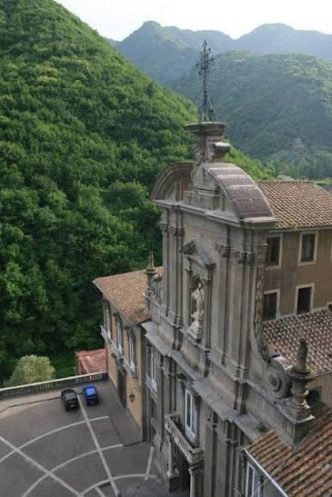

In 1656, a devastating plague struck Cava de' Tirreni, Italy. To stop the epidemic, Father Paolo Franco led a procession up Monte Castello. Upon blessing the plague-stricken city with the Blessed Sacrament, the illness miraculously ceased.
Father Paolo Franco organized a solemn procession of reparation. The faithful journeyed from the Castle of the Annunciation to the higher terrace of Monte Castello. At the summit, Father Franco raised the Blessed Sacrament (Eucharist) and blessed the city below. According to local tradition, the plague stopped immediately following this blessing.
The event is celebrated to this day as the "Feast of the Castello." Each year in June, the town organizes pilgrimages and processions up the mountain to commemorate this miraculous deliverance.